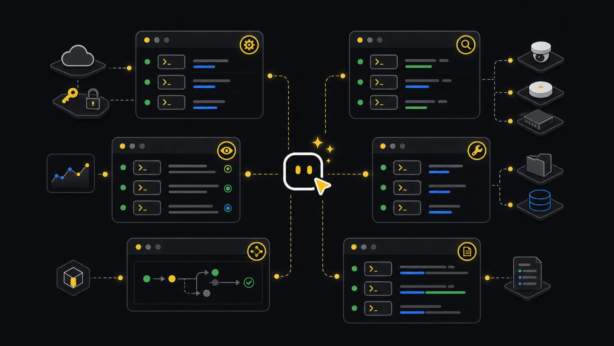

Commands
Commands reference.
Choose commands by the work in front of you: setup, incident checks, fleet reports, endpoint calls, prepared files, flows, Edge operations, or logs.
--format controls setup/status JSON or text. --render selects inspect/report output format; --out writes the rendered result to a file.--tenant <tenant-id> when a machine has more than one Xyte connection.Find the command you need
Start with the question closest to your situation. Run the example, then add --help to that command when you need the full flag list for your installed version.
Run xyte-cli doctor environment first. Then add an API key and run xyte-cli config doctor to confirm the CLI can reach your Xyte account.
Use xyte-cli ops watch incidents for active incident changes. Use xyte-cli ops inspect fleet or xyte-cli ops inspect deep-dive when you need the wider device context.
Use xyte-cli util prepare to turn the file into reviewed rows, rejected rows, and notes. Do not run a claim or move flow until the rejected rows make sense.
Use a flow in --plan mode first. Review the saved plan, then resume with --apply only after you approve the exact changes.
Ask an agent
Ask for the result you need. A shell-capable agent can choose the command, run it, and return the command plus any files it wrote.
Show me whether this tenant is ready for operations.
Show me active incidents and save the fleet context JSON.
I uploaded a spreadsheet of devices to claim. Read it, tell me which rows are native/direct or Edge, explain rows that need more data, and stop before apply.
Find the endpoint for device notes and show a read-only example first.Terminal and CI
In a terminal, start with the task command and add flags as needed. In CI, use JSON, saved files, and plan-only flows unless the job has a separate approval step.
# Human terminal
xyte-cli config doctor --tenant <tenant-id> --format text
xyte-cli ops watch incidents --tenant <tenant-id> --profile incidents-active --once
# CI-friendly read path
xyte-cli config doctor --tenant <tenant-id> --format json
xyte-cli ops inspect fleet \
--tenant <tenant-id> \
--output json \
--strict-json \
--out ./artifacts/fleet.json
# CI-friendly change path
xyte-cli flow run <flow-id> --tenant <tenant-id> --plan --strict-jsonCommand output matrix
This matrix shows what each command group reads, writes, saves, and returns. Automation starts by inspecting state or creating a plan before any tenant change runs.
| Command family | Read/write behavior | Output format | File behavior | Safe for CI | Relevant schema | Common failures |
|---|---|---|---|---|---|---|
| doctor environment | Reads local runtime. | --format json or text. | No required files. | Yes. | xyte.doctor.environment.v1 | Node too old, package unavailable, blocked install path. |
| setup run/status | Setup stores the API key under a local profile; setup status reports readiness. | --format json or text. | Reads key file or stdin; writes local credential profile. | Yes, with stdin secret. | n/a | Empty secret, wrong provider, rejected key. |
| status | Fast readiness status for operators and agents. | --format json or text. | No required files. | Yes. | xyte.status.v1 | Auth failure, network failure, wrong profile. |
| config doctor | Run connectivity and readiness diagnostics without changing tenant data. | --format json or text. | No required files. | Yes. | n/a | Auth failure, network failure, wrong profile. |
| ops watch incidents | Reads incident state and emits the current frame or changes over time. | Strict JSON or NDJSON frames. | --out writes watch frames. | Yes. | xyte.watch.frame.v1 | Repeated error frame, filter mismatch, long unbounded watch. |
| ops inspect fleet/deep-dive | Reads fleet state and prepares source data for reports or handoff. | JSON, Markdown, or report input. | --out writes source artifacts. | Yes. | xyte.inspect.fleet.v1, xyte.inspect.deep-dive.v1 | Provider scope mismatch, output path missing. |
| flow run --plan | Shows planned actions and stops before applying changes. | Strict JSON or text summary. | Run bundle under --out-dir. | Yes. | xyte.flow.run.v1 | Missing input, paused gate, unresolved target. |
| flow run --apply --resume | Continues an approved flow from its saved run id or bundle path. | Strict JSON or text summary. | Reads original run id or bundle path. | Only in jobs with an approval step. | xyte.flow.run.v1 | Wrong resume path, rejected write, stale target. |
| util prepare | Reads source files and writes local prepared files. | JSON summary plus CSV/notes outputs. | Writes primary, rejected, and notes files. | Yes. | xyte.utility.prepare.v1 | Unsupported action, unreadable input, rejected rows. |
| edge claim-batch | Plans or runs an Edge claim batch from prepared rows. | NDJSON report and summary. | Writes report and resume artifact. | Use plan in scheduled jobs; run apply only from an approved job. | xyte.edge.claim-batch.v1 | Offline proxy, timeout, partial batch, rejected row. |
| edge models | Reads Edge-capable model ids, parameters, and commands. | JSON summary. | No required files. | Yes. | xyte.edge.models.list.v1, xyte.edge.models.describe.v1 | Auth failure, empty model access, wrong model id. |
| edge update-params | Plans or applies a full-replacement custom parameter update on claimed Edge devices. | JSON summary and optional NDJSON report for batch. | Batch writes report and resume artifact. | Use plan in scheduled jobs; run apply only from an approved job. | xyte.edge.params-update.v1 | Unknown label, unsupported current label, missing required parameter, duplicate device row, masked password, model mismatch, read-back mismatch. |
| ops report generate | Renders a report from saved source data. | Markdown or PDF. | Reads saved JSON, writes report file. | Yes. | xyte.report.v1 | Wrong input type, output path missing. |
Core setup
Run these before reports, incident checks, device claiming, or automation on a new machine, workspace, or job.
xyte-cli doctor environment --format json
xyte-cli setup run --non-interactive --key-file <path-outside-workspace> --format json
xyte-cli setup status --field tenantId
xyte-cli config doctor --format json
xyte-cli init --scope project --agents all --force --no-setup- Use
xyte-cli doctor environmentwhen the command is missing or the environment is unknown. - Use
xyte-cli setup statusfor the stored profile state. - Use
xyte-cli config doctorfor live connectivity and credential diagnostics.
Operations
Watch incident changes and inspect current tenant state. Save source JSON when the result feeds a report, dashboard, or agent answer.
xyte-cli ops watch incidents \
--tenant <tenant-id> \
--profile incidents-active \
--once \
--output json \
--strict-json \
--out ./artifacts/incidents.ndjson
xyte-cli ops inspect fleet \
--tenant <tenant-id> \
--provider-scope auto \
--output json \
--out ./artifacts/fleet.json
xyte-cli ops inspect deep-dive \
--tenant <tenant-id> \
--window 24 \
--output json \
--out ./artifacts/deep-dive.jsonEndpoint ops
Discover endpoints before raw API calls. Describe the endpoint, check path and body shape, then call it with explicit JSON.
xyte-cli api endpoints list
xyte-cli api endpoints describe organization.devices.getDevices
xyte-cli api call organization.devices.getDevices \
--tenant <tenant-id> \
--query-json '{"space_id":"<space-id>"}'For write-capable endpoints, prefer a guide or flow first. For one-device command sends, use flow.device-command so the device model’s supported commands, custom_fields, and with_file requirements are captured before the approval gate. If you use xyte-cli api call <endpoint-key> directly, choose the target from endpoint output and read the state back afterward.
xyte-cli api endpoints describe organization.commands.sendCommand
xyte-cli api call organization.devices.getDevice \
--tenant <tenant-id> \
--path-json '{"device_id":"<device-id>"}'
xyte-cli edge models describe \
--tenant <tenant-id> \
--model-id <model-id-from-device>
xyte-cli flow run flow.device-command \
--tenant <tenant-id> \
--plan \
--var device_id=<device-id> \
--var command=<command> \
--var command_extra_params_json='{"delay":5}' \
--var command_file_id=<file-id-if-with_file>Flows and utilities
Flows run repeatable operator work. Utilities prepare messy input files as structured rows for later commands.
xyte-cli flow list --format text
xyte-cli flow run <flow-id> --tenant <tenant-id> --plan
xyte-cli flow run <flow-id> --tenant <tenant-id> --apply --resume <run-id-or-path>
xyte-cli util list-actions --format text
xyte-cli util prepare \
--action <action-key> \
--input <input.xlsx> \
--output-dir ./preparedWorkflow
- SetupCheck readinessConfirm the tenant before running scoped commands.
- ReadInspect stateWatch incidents or save fleet and deep-dive JSON.
- PlanChoose workflowUse a flow or utility dry run when the next step can mutate state.
- ApplyResume approved workRun apply only after the operator approves the plan.
- CheckRead back stateUse inspect or API calls to confirm the final tenant state.
Edge and reports
Edge model discovery is read-only. Edge claim, ping, and custom parameter updates start in plan mode, then apply after approval. Generate reports from saved source files.
xyte-cli edge models list --tenant <tenant-id> --page 1 --per-page 100
xyte-cli edge models describe --tenant <tenant-id> --model-id <model-id>
xyte-cli api endpoints describe organization.edge.startClaim
xyte-cli api call organization.edges.getEdges --tenant <tenant-id> --query-json '{"page":1,"per_page":100}' > ./artifacts/edge-proxies.json
xyte-cli api call organization.spaces.getSpaces --tenant <tenant-id> --query-json '{"path_includes":"<target-path>"}' > ./artifacts/edge-target-spaces.json
xyte-cli edge claim \
--tenant <tenant-id> \
--proxy-id <proxy-id> \
--device-ip <device-ip> \
--device-model-id <device-model-id> \
--space-id <space-id> \
--mac aa:bb:cc:dd:ee:ff \
--sn SN-12345 \
--custom-parameters '{"SNMP community":"public","Port":"161"}' \
--plan
xyte-cli edge claim-status \
--tenant <tenant-id> \
--proxy-id <proxy-id> \
--device-ip <device-ip>
xyte-cli edge update-params \
--tenant <tenant-id> \
--device-id <device-id> \
--set-json '{"Port":"161"}' \
--plan
xyte-cli edge update-params-batch \
--tenant <tenant-id> \
--input ./prepared/edge-params-update.csv \
--report ./artifacts/edge-params.plan.ndjson \
--plan
xyte-cli ops report generate \
--tenant <tenant-id> \
--input ./artifacts/deep-dive.json \
--out ./reports/xyte-report.md \
--render markdownLogs and console
Action logs give a traceable command history. Headless console gives a machine-readable console frame for jobs.
xyte-cli --log-actions --log-actions-path ./logs/xyte-cli.actions.ndjson status --tenant <tenant-id>
xyte-cli logs list --path ./logs/xyte-cli.actions.ndjson --limit 200
xyte-cli logs show --path ./logs/xyte-cli.actions.ndjson --entry <session-id>:<seq>
xyte-cli ops console --headless --screen dashboard --once --tenant <tenant-id>Idempotency and retry guidance
Retry --plan freely. For writes, resume the original run with --apply --resume <run-id-or-path> so the next approved gate stays tied to the reviewed plan.
Keep the same report and resume artifact. Do not start completed rows again; fix failed rows, then rerun with the same resume file.
Dry-run until rows are clean. After partial apply, rerun only the failed rows or use the apply report to remove completed rows.
Regenerate reports from the same saved JSON when you need identical numbers. Create a new source JSON only when the reporting window or tenant state changes.
Run xyte-cli <command> --help against the installed version and adjust the command, not the workflow goal.
Use command-native JSON output or --strict-json. Do not parse human-readable terminal text.
Set --provider-scope organization or --provider-scope partner instead of auto.
Stop at --plan, review the target state, then resume with apply only after approval.